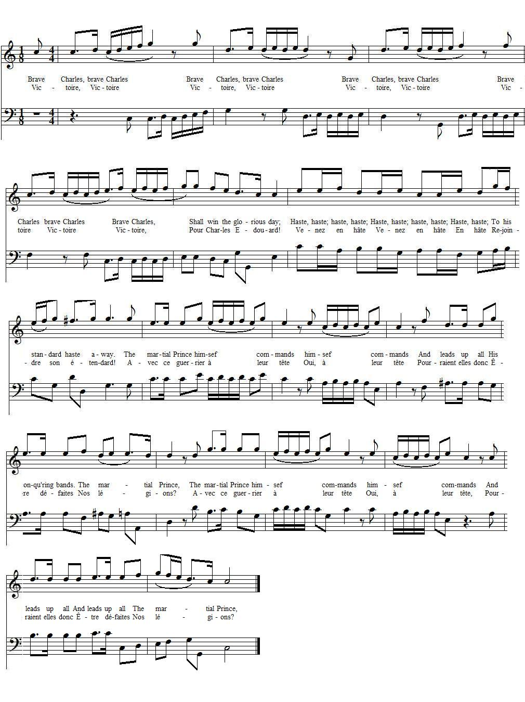
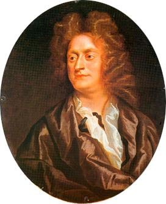

A song to the tune 'To Arms'
Chant sur l'air de 'Aux armes'
from the "True Loyalist" page 89, 1779
Tune - MélodieDuet of the Druids "To arms"
from Henry Purcell's masque "Bonduca", Z 574/15, 1695
|
To the tune:
This Jacobite "gathering song" was apparently composed on the occasion of Charles's landing in 1745. Instead of a popular ditty it seems to use, as a vehicle, an aria from Purcell's "Bundica" (1695, Z 547/15), since we are directed in the "True Loyalist" to sing it to the song "To arms, to arms" and the text is interspersed with "&c." which could hint at manifold repetitions like in baroque operas. [Händel's opera "Belshazzar", 1745, HWV 61, has a 2 line "Chorus of the Persians": To arms, to arms, no more delay! God and Cyrus lead the way. that is evidently too short and could not be set to the Jacobite lyrics.] Bundica is a "masque" or semi-opera, a sort of musical show that died out after Purcell (1659 - 1695). Bonduca is the Briton heroine Boudica , the Queen of the Iceni, who, like England at the time (1695), was fighting against Rome. The story features a male hero, Caratach (Caradoc), who plays a more important part than his Queen, maybe a hint at William of Orange who took precedence over his wife, Mary, the heir of James II. To choose this tune to be set to Jacobite lyrics was a scoffing challenge to the Whigs. The original text reads as follows: "To arms, to arms, Your engines straight display! Now, now, Set the battle in array! The oracle for war declares. Success depends Upon our hearts and spears." |
 |
A propos de la mélodie:
Ce "chant de rassemblement" fut semble-t-il composé à l'occasion du débarquement de Charles en 1745. Au lieu d'une chanson en vogue il utilise comme timbre une aria tirée du "Bundica de Purcell (1695, Z 547/15)). En effet, il est indiqué dans le "Vrai loyaliste": "sur l'air de 'Aux armes, aux armes!'" et le texte est parsemé de "etc." qui semblent indiquer des répétitions multiples telles que la musique baroque les affectionne. [L'opéra de Händel, "Belshazzar", 1745, HWV 61, renferme un "chœur des Perses" de 2 lignes: Aux armes, sans plus tarder! Dieu et Cyrus vont nous guider. Qui est trop court, à l'évidence, pour accompagner le texte Jacobite.] Bundica est un "masque" ou semi-opéra, un genre musical qui s'éteignit avec Purcell (1659 -1695). Bonduca est l'héroïne bretonne Boadicée , reine des Icènes, qui, comme l'Angleterre de l'époque (1695) était en lutte contre Rome. L'histoire donne le beau rôle à un homme, Caradec, qui éclipse sa reine par ses hauts-faits. Faut-il y voir une allusion à Guillaume d'Orange, qui prit le pas sur son épouse, la reine Marie, fille de Jacques II? Le choix de ce timbre pour accompagner un texte Jacobite était un pied de nez aux Whigs. Le texte original est le suivant: "Aux armes, aux armes, Déployez vite vos machines! Vite, vite Rangez-vous en ordre de bataille! L'oracle est en faveur de la guerre. Le succès dépend De votre courage et de vos lances." |

|
A song to the tune 'To Arms'
1. Brave C[harle]s, brave C[harle]s Shall win the glorious day; Haste, haste; haste, haste; To his standard haste away. The martial P[rin]ce himsef commands And leads up all His conqu'ring bands. The martial P[rin]ce, 2. Then Britons behold Behold the warlike youth, Speaks, breathes and defends, Your darling liberties with truth. Shake off, shake off, The Han[o]verian yoke Godlike C[harle]s Shall give the wish'd for stroke. 3. He's at your gates With sword in hand, Restore yourselves Again to his command. He'll chase away, away From ancient Albion's shore The tyrant's race Shall sway the scepter no more. 4. Behold, behold Th'usurper mercy craves Glorious Edward Mercy quickly gives. The godlike P[rinc]e revenge suspends His mortal foe, unpunished home he sends. Then Britons, rejoice The golden age again's your own, Whilst , whilst your true Prince And native Hero mounts the th[ro]ne. Source: "The True Loyalist; or, Chevaliers's Favourite: being a collection of elegant songs, never before printed. Also several other loyal compositions, wrote by eminent hands." Printed in the year 1779. |
 Henry Purcell (1659 - 1695) |
Chant sur l'air de "Aux armes!"
1. Victoire, victoire Pour Charles Edouard! Venez en hâte Rejoindre son étendard. Avec ce guerrier à leur tête Pourraient-elles donc Etre défaites, Nos légions? 2. Britons admirez Sa martiale jeunesse Qui pour vos libertés Chéries accomplit ces prouesses. Secouez, secouez De Hanovre le joug! C'est Edouard Qui portera le coup. 3. Il vient vers vous Sabre à la main Et veut pour tous Nouveau destin Et le voilà qui chasse Des rivages d'Albion L'indigne race Asservissant la nation. 4. L'usurpateur Implore sa clémence Qu'Edouard a tôt fait d'accorder; Le Prince oubliant la vengeance Renvoie chez lui l'adversaire acharné. O Britons, chantez Car l'âge d'or est de retour Votre Prince accède Au trône antique et pour toujours. (Trad. Christian Souchon (c) 2011) |